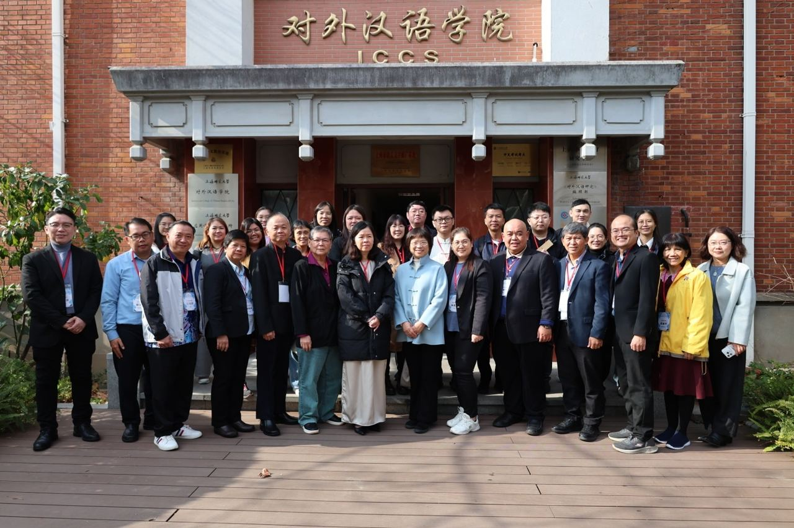
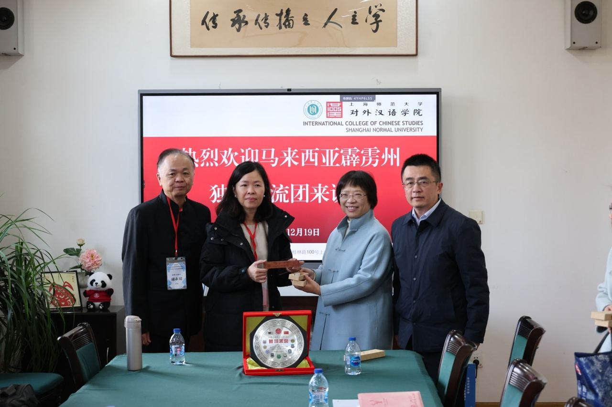
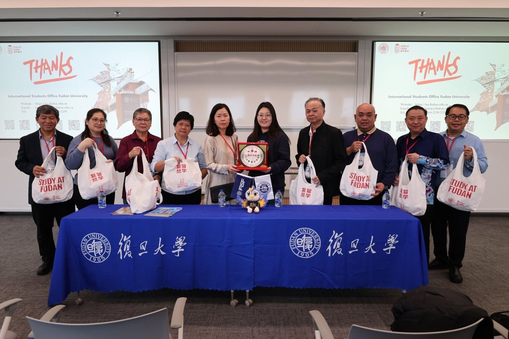
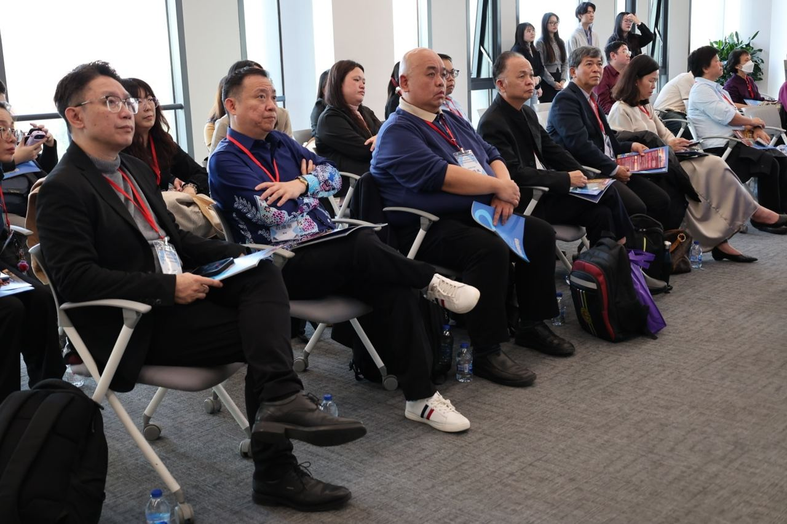

一场跨越中国南北取经之路
一场跨越中国南北取经之路
全霹雳九所独中联手链接中方教育学府
探索AI赋能教育与开辟多元升学道路造福学子
从上海的学术高地到天津的理工强校，从“成功教育”的发源地到AI赋能的未来课堂，霹雳州九所华文独立中学组成的“上海成功教育参访团”，在为期12天的行程中，不仅完成了对中国顶尖教育资源的深度考察，签署了多项战略合作协议， 更深入教学一线，实地考察上海市闸北第八中学“AI赋能成功模式”。此行不但为“多元升学”铺设了坚实轨道，更为霹雳州独中未来的教学改革探索更多可能性。
升学新局 ：对接顶尖名校 打通多元升学管道
在升学版块，参访团锁定了“综合性顶尖大学”与“应用型理工强校”两大方向。在上海师范大学，双方聚焦于“师资造血”，探讨了开设教育专业硕士项目及在职教师研修班，旨在从源头提升独中师资水平。而在中国顶尖学府复旦大学，参访团详细了解了该校2026年国际本科招生新政（CSCA考试），并与就读该校的大马留学生座谈，获取了关于金融科技等前沿专业的第一手资讯。
行程北上天津理工大学时，参访团代表胡永铭校长与该校副校长王铁共同见证了合作谅解备忘录的签署。双方不仅确立了更紧密的生源输送机制，天理大更承诺为持统考文凭的优秀独中生提供考试补贴，重点开放计算机、材料科学等ESI全球前1%的优势学科，为独中生开辟了通往高端理工领域的绿色通道。
教改深化：再探“成功教育” 深度学习AI赋能课堂
此行的重中之重，是参访团深入上海市闸北第八中学，进行了为期三天的蹲点学习。作为“成功教育”的发源地，闸北八中并未止步于过去的辉煌，而是与时俱进，展示了“成功教育+智能技术”的最新成果。
参访团团长 陈丽冰校长 指出，团员们在蹲点深度学习后纷纷表示震撼，尤其亲眼见证该校利用“三个助手”智能平台（备课助手、教学助手、作业辅导助手）重塑课堂。 “我们看到AI技术如何通过数据分析，帮助老师精准掌握每一位学生的学习进度，实现真正的差异化教学。这种‘技术服务于育人’的模式，让‘成功教育’理念在数字时代焕发了新的生命力。”
陈校长强调，此次考察让霹雳九独中对“成功教育”的高度与深度有了全新的认知。各校代表在交流中，积极探讨“AI赋能成功教育”模式带回马来西亚霹雳州独中华文教育中落地与在地化可行性，并透露出深切的期望，希望未来能通过更深度的合作，共同商讨出适用于独中学子的智慧教学方案。
文化寻根： 沉浸式体验 铸造人文底蕴
除了硬核的学术交流，参访团也进行了一场深刻的文化洗礼。在苏州，团员们走进拙政园与寒山寺，体悟江南园林的美学与唐诗的意境；在上海，探访了豫园的海派文化；在天津，则体验了“泥人张”等非遗技艺。 这种“行走中的课堂”，不仅加深了教育工作者对中华文化的理解，也为未来组织学生赴华游学积累了丰富的课程素材。
全霹雳独中校长与核心行政人员
集体出征 共享成果
此次“上海成功教育参访团”是霹雳州九所独中近年来规模最大、层级最高的集体出海行动。通过这种联盟式的出访，霹雳独中成功构建了与中国一流院校的常态化对话机制。随着行程圆满结束，九所独中带回一套结合了“AI技术、师资培训、多元升学”的完整教育升级方案。未来，各校将此行所获转化为具体的校本课程与管理制度，共同推动霹雳州华文教育迈向高质量发展的新阶段。



